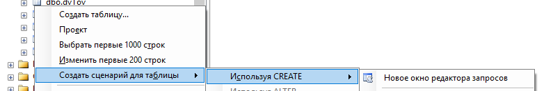
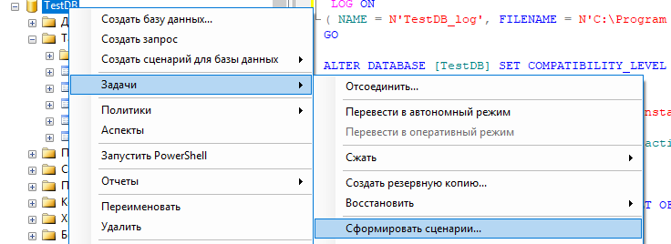
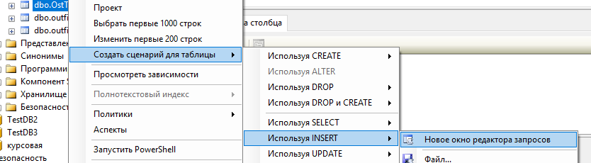

ПАРКТИЧЕСКАЯ РАБОТА №10. КОПИРОВАНИЕ БАЗ ДАННЫХ СРЕДСТВАМИ КОМАНД SQL
1. ЦЕЛЬ И ЗАДАЧИ РАБОТЫ
Целью выполнения работы является получение практических навыков по копированию баз данных средствами команд SQL.
Задачами работы является изучение команд создание объектов данных DDL, команд модификации данных, обеспечивающих создание копии базы данных.
2. КРАТКИЕ ТЕОРЕТИЧЕСКИЕ СВЕДЕНИЯ
Создание копии с использованием средств администрирования рассмотренное в прошлой работе позволяет создавать копии для базы данных или для одного и того же сервера или для совместимых версий серверов MS SQL SERVER. Но часто возникает задача переноса данных на другую, более позднюю версию сервера, что невозможно средствами, создания и восстановления резервной копии. Для копирования данных на более позднюю версию сервера или даже на другой сервер всегда могут быть использованы команда подъязыков SQL DDL и DML. В данном случае копирование будет заключатся в создании таблиц и других объектов данных идентичных исходной базе и заполнения данных в таблицы через команды вставки данных.
Для упрощения работы по генерации команд создания отношений можно воспользоваться предоставляемые средой SSMS возможностью автоматической генерации данных команд через контекстное меню.

Рис.10.1 Вызов автоматической генерации команд создания таблиц
Код, который будет сгенерирован при этом, приведен ниже.

Рис.10.2 Автоматически сгенерированный код для создания существующей таблицы
Существует возможность автоматической генерации сценария для создания всех объектов базы данных.

Рис.10.3 Вызов автоматической генерации сценариев создания объектов базы данных
Однако полученный сценарий, в случае копирования на другой сервер необходимо скорректировать.
Заполнение данных производится через команды insert. Генерация шаблонов этих команд также может быть выполнена автоматически.

Рис.10.4 Вызов автоматической генерации команд вставки данных в существующую таблицу
3. ПОРЯДОК ВЫПОЛНЕНИЯ РАБОТЫ
1. Создать новую базу данных в текущем подключении к серверу.
2. Создать команды для создания объектов данных в новой базе идентичных существующим в исходной базе данных. Данные команды оформить в виде отдельно файла «.sql».
3. Создать команды для заполнения таблиц данными. Оформить данные команды в виде второго файла «.sql».
4. Выполнить скрипты для создания и заполнения объектов в новой базе данных.
5. Выполнить запросы, подтверждающие идентичную работу исходной и целевой баз данных.
6. Создать отчет по работе, включающий отображение в виде копий экрана этапы выполнения работы.
4. ЗАДАНИЯ ДЛЯ ВЫПОЛНЕНИЯ
Заданием для работы является создание копии базы данных, в которой выполнялись работы по созданию хранимых процедур и триггеров.
5. КОНТРОЛЬНЫЕ ВОПРОСЫ
1. Какие объекты в базе данных могут присутствовать?
2. Назовите команды создания таблиц в базе данных, хранимых процедур, триггеров.
3. Какие команды используются для заполнения таблиц данными?
4. Каким образом можно автоматически сгенерировать команды для создания и заполнения базы данных?
5. Какие методы создания копии баз данных вы знаете?